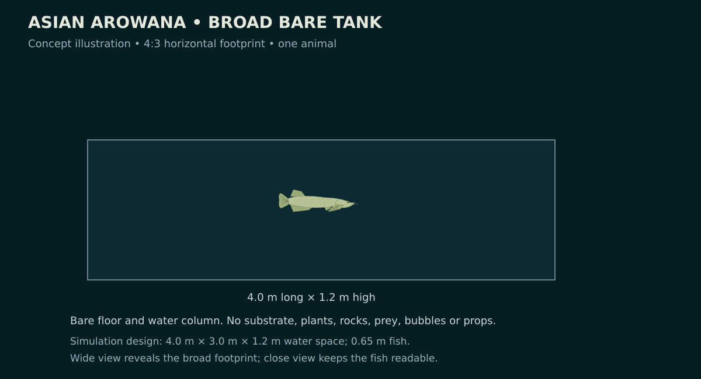
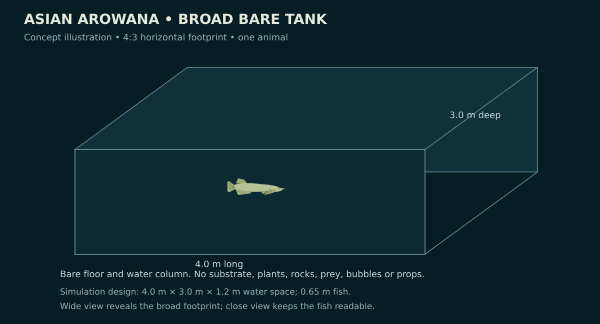
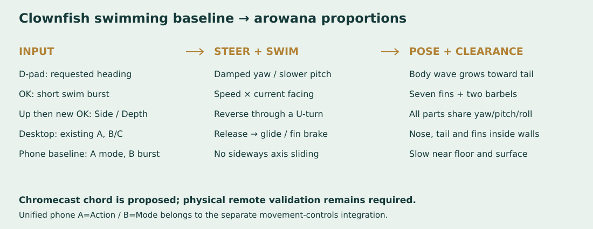
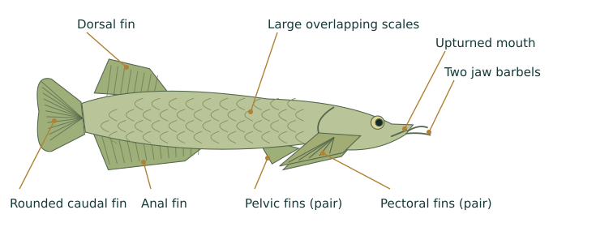
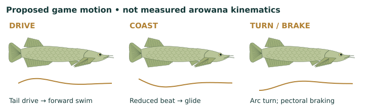
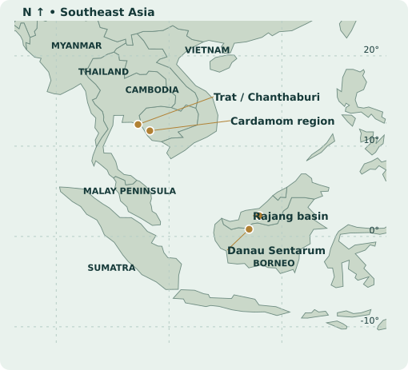

Asian Arowana
One fish. Bare tank. Concept illustrations for the new level; the level is planned.
Plan Markdown · Actual A3 poster · Print PDF
Side view

Oblique view

Controls and rig

Anatomy

Movement study

Research map
